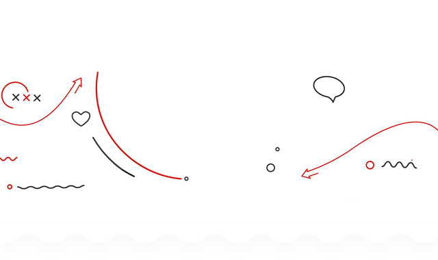
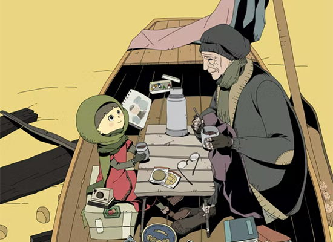
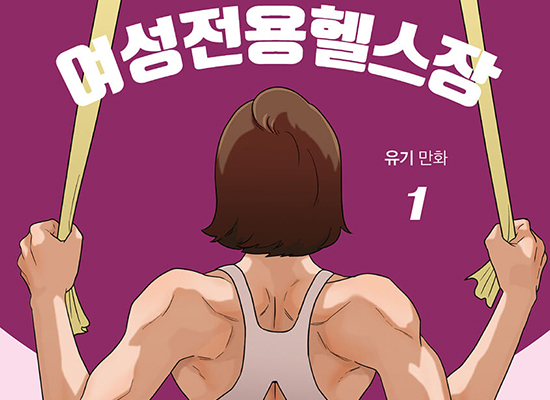
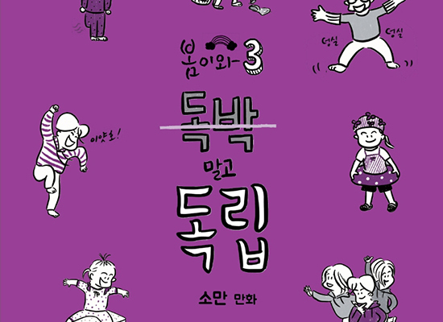
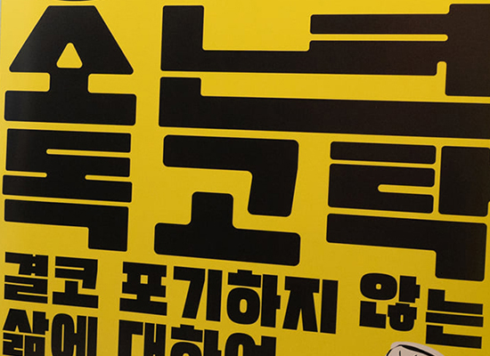
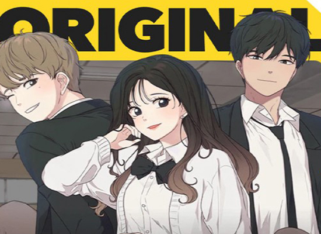

사업소개
BUSINESS
창작 및 제작지원
다양성만화 제작지원
- “결국, 우리가 성장하고 변하도록 돕는 것은 다양성이다.”
-

-
한국 만화의 지속적 발전과 건강한 생태계 확장을 위한 다양성을
강화하는 지원사업입니다. 상업성을 떠나 다양한 장르·소재의 실험적인
만화, 대안적 성격의 작품 창작 및 홍보 프로모션을 지원합니다.
창작 초기단계 지원
- “작가들이 가장 힘들어하는 기획/취재 단계 맞춤 지원!”
-

-
가능성 있는 아이디어가 우수한 만화IP로 개발될 수 있도록 창작 초기
기획·취재 단계를 집중 지원하여 작품 창작에 ‘몰입’할 수 있는 기회를
제공합니다. 신규 작품을 준비 중인 만화가, 작가지망생(경력무관)
신청 가능합니다.
만화 독립 출판 지원
- “창작자 중심의 만화 출판·유통 지원”
-

-
출판사/플랫폼 중심의 만화 유통 시장에서 창작자의 출판 역량 및
독립성을 강화하기 위한 지원사업입니다. 또한 웹툰 주류의 만화
시장에서 출판 만화의 다양성 확대을 견인하고자 합니다. 독립 출판을
위한 비용 및 컨설팅, 프로모션 등을 지원합니다.
만화 콘텐츠 다각화 지원
- “만화로 만개하는 수백만 가지의 콘텐츠!”
-

-
만화 전시, 만화 관련 팟캐스트, 컨퍼런스·작가 토크쇼 등 문화행사 등
만화를 활용한 다양한 문화향유 콘텐츠 개발 및 제작비를 지원합니다.
수출작품 번역 지원
- “우수한 만화IP의 해외 수출 활성화를 위한 번역 지원”
-

-
우수한 한국 만화가 세계 시장에 뻗어나갈 수 있도록 번역 및 재제작
비용을 지원합니다. 출판사, 플랫폼, 에이전시 등 법인 및
개인사업자를 대상으로 진행됩니다.